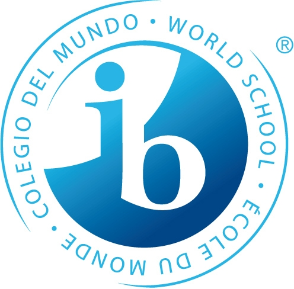
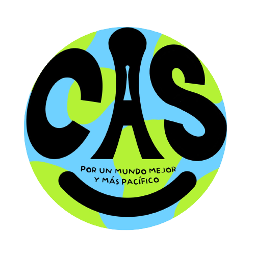

CAS e IB
Información del programa
Programa del Bachillerato Internacional (IB)

El programa de IB está diseñado para formar personas íntegras que puedan enfrentarse a los desafíos actuales con optimismo y una mentalidad abierta.
Durante más de 50 años, nuestros cuatro programas han brindado un marco sólido y coherente, así como la flexibilidad para adaptar la educación de los alumnos según su cultura y contexto.
Los programas del IB permiten a los docentes formar jóvenes resilientes y motivados que tienen el conocimiento, las habilidades y el sentido de finalidad necesario para ser exitosos durante su vida y ayudar a hacer del mundo un lugar mejor.
CAS

CAS significa Creatividad, Actividad y Servicio. Es un programa de aprendizaje experiencial que nos invita a salir de las aulas y aprender a través de la acción y la reflexión. Se divide en tres áreas fundamentales:
- 1. Creatividad No se trata solo de pintar o tocar un instrumento. La creatividad en CAS abarca el pensamiento original y la imaginación. Se trata de explorar y ampliar ideas que conduzcan a un producto o actuación original.
- 2. Actividad Esta área fomenta un estilo de vida saludable mediante el esfuerzo físico. Nos impulsa a establecer metas personales relacionadas con la salud y el bienestar, y a superar nuestros propios límites físicos.
- 3. Servicio El servicio es, para muchos, la experiencia más transformadora de CAS. Consiste en una colaboración voluntaria y no remunerada que beneficia a una comunidad o aborda una necesidad social, ambiental o global genuina. El servicio debe ser recíproco: beneficia a la comunidad, pero también representa un gran aprendizaje para el alumno.